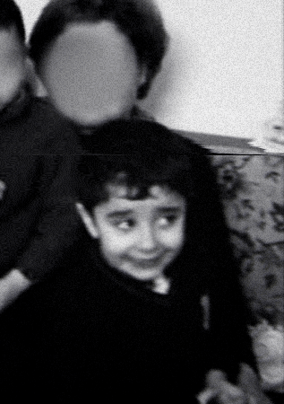

Hey! I'm Majd, a Running Start (RS) student at Bellevue College. I made this portfolio to showcase what a student may learn throughout the DEV109 course at Bellevue college.
Goals:
My primary academic goal is to build a solid foundation in computer science and web development. I hope to pursue a degree in Computer Engineering in the near future.
Interests:
Outside of academics, I also enjoy photography, graphic design, and playing videogames.
Music is also a big part of my life. My music taste is quite diverse, ranging across multiple genres like rap, hip-hop, and even classical music.
